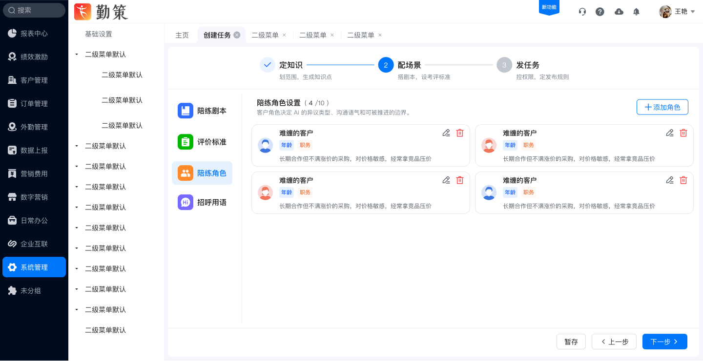
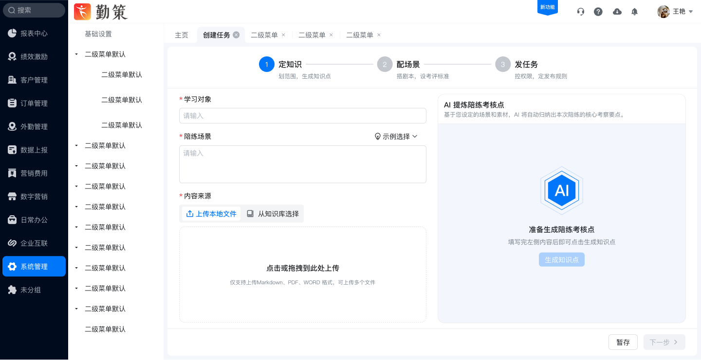
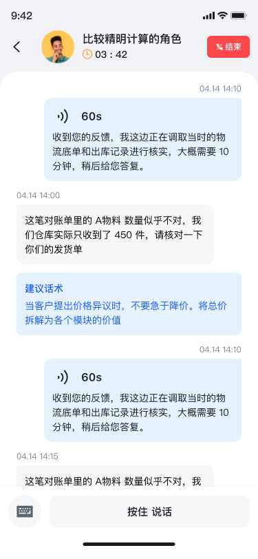

AI PRODUCT · WEB CONFIGURATION × MOBILE PRACTICE
AI 销售
陪练
Web 配置端 × 移动练习端
让管理者能配置，让销售能练习，让结果能复盘。
我将 Web 端的任务配置、移动端的知识学习与 AI 对练串成一条闭环，让训练从“创建任务”真正走到“练习反馈”。
UX 交互设计信息架构AI 状态设计高保真方案跨端体验闭环



AI
COACH
COACH
01 / EXPERIENCE LOOP
从 Web 配置到移动端复盘，体验要能走完整一圈。
我把跨端体验拆成五个可验证节点：每一个节点都有清晰的输入、输出和反馈，避免 Web 和 Mobile 只是两组孤立页面。
选择流程节点，查看该阶段的用户任务、端侧职责和关键界面。
WEB · CONFIGURE
先让管理者把一次训练任务配置完整
Web 端负责把知识、角色、场景、评分和发布对象组织成任务。这里的关键不是堆功能，而是让每个前置条件都可确认。
02 / CROSS-PLATFORM SCREENS
分别看 Web 和 Mobile，但始终沿着同一条任务链理解。
不把所有截图平铺，而是按“配置端 / 练习端”切换，选择能够说明任务输入、交互状态和结果反馈的关键页面。点击页面可放大查看细节。
DEFINE KNOWLEDGE · STEP 01
用三步向导承接复杂配置
把用户当前需要完成的内容收敛在一个步骤中，同时用顶部步骤条保持全局方向感。
01 / 08
渐进式披露步骤上下文输入可检查